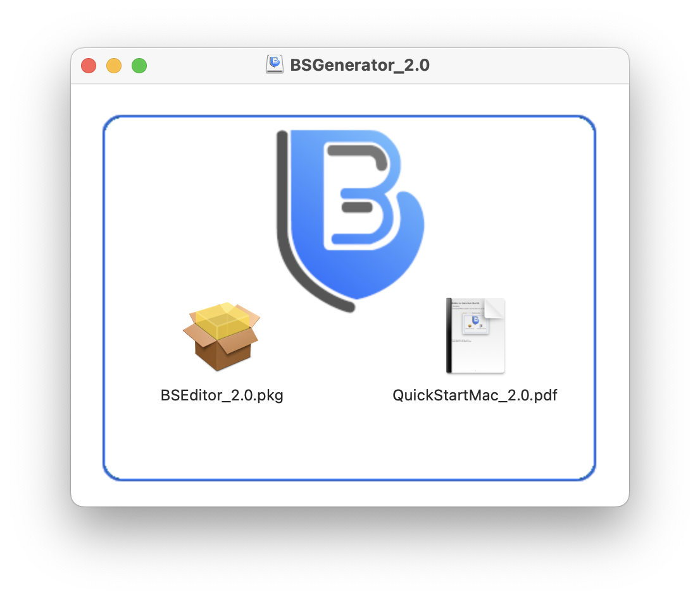

2. Installation
Both the MacOS and the Windows versions are certified, so installation should
be straightforward.
2.1 MacOS
After downloading the DMG file, double-click it to mount the volume. It
contains a PKG file (the installer), and a quick start PDF document.

Double-click the pkg file, and go through a standard MacOS installation
procedure; you may need to type the system's password to proceed (this is
so that the software can be installed in your Applications folder). Once
the installation is complete, you can choose to remove the installer from
your machine.
2.2 Windows
BSEditor v2.0 and later are provided through the Microsoft Store. To install
it, open the Microsoft Store app on your computer, search for BSEditor, and
choose Get. As with the Mac version, the installer goes through a typical
Windows installation process; for better results, try to stick to the default
choices. Once the installation is finished, you will find a "BSGenerator"
folder in your Start Menu, with the executable "BSEditor" inside it.
2.3 Uninstall
BSGenerator does not provide a specific uninstall, so you can use the standard
uninstalling procedure for your operating system:
- For Windows, go to the main Windows "Settings" application, then choose
"Apps", "Apps & features"; then click the triple verticals dots next to
BSGenerator, and choose "Uninstall".
- For MacOS, head over to "Applications", and just drag the BSGenerator icon
to the recycle bin.